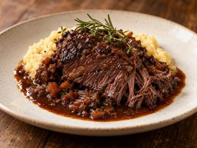

← Back to all recipes
BEEF · PIEDMONT
Stracotto di Fassona Piemontese
Piedmontese-style beef slowly braised in red wine with vegetables, herbs, and a deeply reduced sauce.
4 hrServes 4
SLOW BRAISE
Meat tip: Low heat and time are the point: keep the braise at a bare simmer so the beef tenderizes without tightening.
See the Meat Cooking Guide →
Ingredients
- 3 lb beef chuck or shoulder roast
- Salt and black pepper
- 2 tbsp olive oil
- 1 onion, diced
- 1 carrot, diced
- 1 celery stalk, diced
- 4 garlic cloves
- 2 tbsp tomato paste
- 2 cups dry red wine
- 2 cups beef stock
- Rosemary, thyme, and bay leaf
Preparation
- Season beef and brown deeply in olive oil; remove.
- Cook onion, carrot, celery, and garlic until soft. Stir in tomato paste.
- Add red wine and reduce by one-third, then add stock and herbs.
- Return beef, cover, and braise at 325°F for 3–3½ hours until fork-tender.
- Reduce sauce if needed and serve sliced or pulled with the braising vegetables.